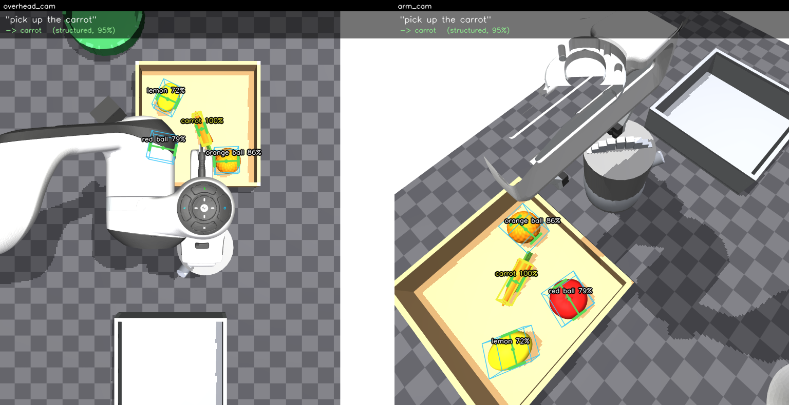
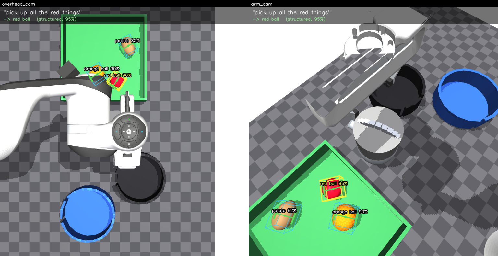
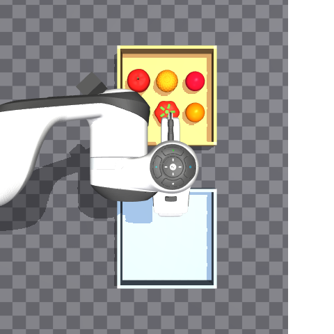
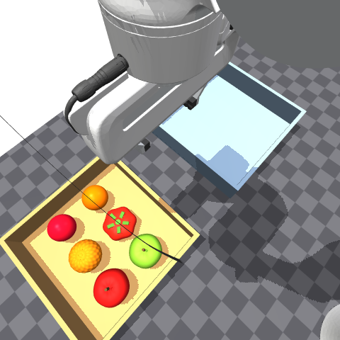
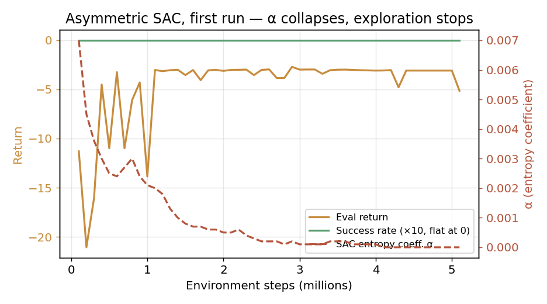

← All projectsKitchen Semantic Pick-and-Place · VLM Grounding into Asymmetric RL
In Progress · Vision-Language Grounding & Manipulation
Kitchen Semantic Pick-and-Place · VLM Grounding into Asymmetric RL
Personal research project · Franka Panda · MuJoCo · OWLv2 · Asymmetric SAC
Jul – Aug 2026 · ongoing
In progress
Done and measured: the randomised kitchen environment, a scripted expert that solves it,
and the full VLM grounding pipeline — 98% recall, 4.8 mm position error, 95% grasp validity on
14 scenes / 60 objects. Open: the RL half. The first asymmetric-SAC run collapsed and is
reported below as it happened, not cleaned up. Algorithm choice is the live question.
A Franka Panda in a randomised MuJoCo kitchen that takes instructions in English —
"pick up all the apples", "put the carrot in the blue bowl",
"move all the red items to the black bowl" — and has to work out what that means about the
objects actually in front of it.
The design constraint that drove everything: a policy trained on privileged simulator state
cannot later be driven by a camera. It learns to rely on exact poses of occluded objects and
perfect labels, and swapping in real perception silently destroys it. So the policy never reads sim
state. It reads Detection objects from a perception interface, and the training-time
implementation of that interface reads the simulator and then deliberately degrades it —
position noise, dropped detections, confused labels.
Which raises the question that makes this project interesting: degrade it by how much?
Guessing the noise numbers would make the whole setup theatre. So I built and measured the real VLM
grounding pipeline first, then set the noise model from those measurements. The policy trains against
a statistical model of a detector I have actually characterised, and deploys against that same
detector.
detection recall over 14 scenes / 60 objects, two fused camera views
4.8 mm
mean position error (median 3.2 mm); yaw error 3.7° on elongated objects
95%
of synthesised grasps feasible against the real gripper's limits
96%
scripted-expert episode success over 80 randomised layouts — the task is solvable
Scripted expert, full task. The instruction and live progress are overlaid; the
insets are the two cameras that feed the policy. This exists to prove the task is solvable before
any GPU time is spent — so a failed RL run is unambiguously an RL problem.Command → VLM → execution. Language is parsed to a predicate over the catalog,
OWLv2 grounds it against what is on the counter, and the resulting detections drive the
controller. Nothing here reads simulator state.
The Environment Is the Experiment
Nothing is fixed except the counter and the robot's mounting. A policy cannot memorise a layout because next episode it is a different container, somewhere else, possibly one of two.
Randomised Every Reset
3–6 of 9 objects, rejection-sampled position and yaw; source container position, size (0.115–0.150 m) and colour; destination shape (one basket / one bowl / two bowls); kettle obstacle placed between source and destination.
Why the Objects Are Adversarial
Of 9 objects, 3 are red, 3 are orange — and "orange" is also a category — 2 are apples, and 2 round ones are toys not produce. A policy that learns "red → grab" scores 33% on colour queries.
Three Elongated Objects
A parallel jaw closes across an object's short axis. Handed only a centroid, it closes along the carrot's length and shoves it away. This is what makes the orientation channel load-bearing rather than decorative.
Action Space
Box(−1, 1, (5,)) = end-effector deltas [dx, dy, dz, dyaw, gripper], not joint deltas. Joint control would make the policy discover IK before the task, and every open VLA emits EE deltas — so demonstrations fine-tune an action model with no lossy retarget.
Sparse +1 per correct placement, −1 per misplacement, +5 on success, plus potential-based dense shaping. Potential-based specifically: a raw −distance term provably changes the optimal policy — it pays the agent to hover between two objects forever.

Grounding "pick up the carrot" — oriented boxes, both cameras fused

A second randomised layout — different container, size and contents

overhead_cam at z = 2.05 m — above the elbow, not looking at it

arm_cam on link5, 12 cm off centreline — measured, not guessed
Stage 1 · VLM Grounding, Measured
14 scenes, 60 objects. Images and a command in; identity, pose, oriented bounding box and a feasible grasp out. Nothing moves.
Metric
Result
What it bounds
Recall
98%
◆ sets the policy's dropout rate
Position error
4.8 mm (median 3.2)
sets position noise σ
Size error per axis
4.2 mm
extent noise
Yaw error, elongated objects
3.7°
sets yaw noise σ
Grasp validity
95%
◆ end-to-end usefulness
Label accuracy
76% (90% excl. orange pair)
sets label-confusion rate
Known limit, stated because it is systematic rather than random: the orange fruit
and the orange ball are 54 mm and 50 mm spheres of near-identical hue, separated only by a pebbled
texture that is not resolved at 768 px. The pipeline gets this pair wrong essentially always — and
reports low identity confidence when it does. That single pair is the entire gap between 76% and 90%.
Why Identity Needed Three Independent Sources
The detector's own labels were not just inaccurate, they were wrong systematically: red apple → "red ball", orange → "orange ball".
Identity pipeline
Label accuracy
What the added source contributes
Detector label alone
20%
—
+ re-classify on an upscaled crop
60%
resolution, not reasoning
+ calibrated shape prior
66%
metric extent — squat tomato vs round apple
+ colour coverage
74%
decisive between hue-separated objects, silent within a hue
+ shape weighted above appearance
◆ 83%
geometry is measured, appearance is inferred
Each source contributes what the others cannot. Shape is the only thing separating a squat tomato
from a round apple; colour is decisive between hue-separated objects and deliberately silent between
same-coloured ones; appearance carries gross category. The final ordering — shape above appearance —
is the single largest jump in the ablation.
The Two Stages Are Linked by Measurement
A VLM cannot run inside an RL loop — OWLv2 costs ~0.5 s per frame against millions of training steps. So the policy trains against a model of the detector and deploys against the detector.
01The noise constants are not tuned, they are transcribed.position_noise_std = 0.005 because position error measured 4.8 mm.
yaw_noise_std = 0.065 because yaw error measured 3.7°.
label_noise_prob = 0.22 because label accuracy measured 76%.
dropout_prob = 0.03 because recall measured 98%. The substitution is only honest if the
model matches reality, so the evaluation above is what sets them.
02Label confusion is structured, not uniform. A real detector never confuses a green apple
with a red ball — it confuses red apple ↔ red tomato ↔ red ball, and orange ↔ orange ball.
Injecting uniform label noise would teach the policy that labels are useless; injecting the
actual confusion structure teaches it to fall back on the shape cues the meshes carry.
03Yaw noise scales with roundness. For a sphere the principal axis is genuinely
undefined, not merely noisy. So the error is divided by (aspect − 1): the carrot
gets an accurate yaw, the spheres get something near-uniform plus an orientation confidence of 0
that says "do not use this."
04Orientation is encoded as cos 2θ / sin 2θ, not θ. A parallel jaw is symmetric under a half
turn, so a carrot at +80° and one at −100° need the same wrist angle. Feeding the
raw angle makes two identical situations look maximally different and puts a discontinuity at
±90°, in the middle of the useful range.
05The boundary is enforced by naming, so it is auditable. Privileged fields are
true_*, camera-derived fields are camera_*. Checking that the VLM path
never touches privileged state is one grep, which means it actually gets checked.
Stage 2 · Asymmetric SAC — First Run, and Why It Failed
Actor sees the 392-dim noisy camera-derived observation. Critic additionally sees 156 dims of exact scene state, and is discarded at deployment.
Quantity
At 100k steps
At 5.1M steps
Reading
Success rate
0%
0%
never solved an episode
Objects placed
0%
0%
—
Eval return
−11.3
−5.1
learned to avoid penalties, not to succeed
Entropy coefficient α
0.0070
< 1e−6
◆ exploration switched itself off
Critic loss
0.18
~0.0001
confidently fitting a flat value function
Q estimate
17.8
−1.1
collapsed to the no-op return
This is a real negative result, left in. α decaying to zero while success stays at
0% is the diagnostic: SAC's automatic temperature tuning drove entropy down because the critic saw
no reason to keep exploring, and a critic with no terminal rewards to regress on has nothing to
learn except "everything is worth about −1." Success is ~350 control steps of precise
sequencing, which random exploration essentially never completes. The intended fix — seeding the
replay buffer with scripted-expert episodes so the critic has real terminal rewards from the start —
is implemented but had not been exercised in this run. Curriculum order (starting on
KitchenReach-v0 rather than the full task) is the other lever.

Return recovers toward the no-op baseline while α collapses — the signature of exploration shutting down
Measured, Not Guessed
Each of these was a real bug or a wrong answer at some point, and each would be easy to silently reintroduce.
01A hardcoded workspace clamp made an entire container unreachable. The commanded-TCP box
started at x ≥ 0.20, but the secondary source bowl sits at 46–68° where x drops
to 0.11 — so every object in it was kinematically reachable and forbidden by the environment.
The arm stalled against the limit, nothing raised an error, and it presented as a grasping failure.
Worth 5 points of expert success. The box is now derived from the layout constants, with a
test asserting every spawned object falls inside it.
02Grasp detection needed hysteresis. A held capsule rolls slightly and one pad can break
contact for a single frame. With a strict two-finger test every step, the carrot was "dropped"
mid-lift on three consecutive attempts at exactly its correct 29 mm jaw width. Acquiring needs
both fingers; keeping needs one plus proximity. This one fix took the expert from
86% → 94% episodes.
03Tuning on an isolated object was anti-correlated with the real distribution. An
isolated-object grasp sweep picked a −0.012 offset as a clean 100%. On crowded six-object
episodes that same offset scores 25%. Not noisy — pointing the wrong way.
04Camera placement was solved and scored, not eyeballed. The Panda's elbow rides at
z ≈ 1.55 m, so an overhead camera at 1.62 m renders almost nothing but robot; at 2.05 m
the elbow is 35° off-axis and out of frame. The arm camera sits on link5, not the gripper —
an eye-in-hand camera dives at whatever it reaches for, while a forearm camera keeps the other
candidates in view, which "all the red items" needs. On-centre it stares into its own
wrist (49% of frame is robot, 3/6 objects visible); 12 cm off the centreline gives 6/6.
05Freeze waypoints during grasp and lift. Tracking an object's live position while
the jaws close makes the arm chase what it just nudged — 23 mm of lateral drag, which shears thin
objects out of the pinch.
06Model-level randomisation compounds.mj_resetData restores data, not
model, so geom_size *= scale shrinks a basket to nothing over ten resets.
Every geometric write now comes from a pristine snapshot.
My contribution
The whole system: procedurally generated kitchen scene and object meshes, the randomised layout
sampler, the semantics catalog and instruction parser, the privileged/unprivileged perception
boundary, the OWLv2 grounding pipeline through to grasp synthesis, the scripted FSM expert, the
observation encoders, the asymmetric SAC implementation, and the measurement tooling that set the
noise model.
Upstream
Franka Panda model from MuJoCo Menagerie (Apache-2.0), with 9 documented local modifications —
the stock gripper is ~1.4 N per finger, stiffened 6× with gainprm rescaled to
preserve the ctrl→position mapping. OWLv2 detector weights, used frozen.